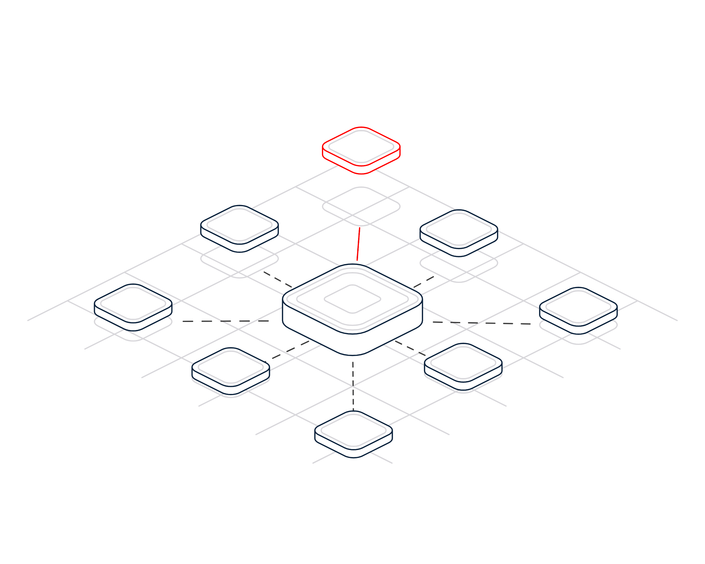

Within Tolerance
● T+00:00 Incident declared
● T+00:02 Alert sent · push, SMS, voice
● T+01:30 Escalated · no response
● T+04:10 Team acknowledged

Crisis playbook · No. 01
Week of 9 November 2026
Financial Services and Insurance
Within
tolerance.
A crisis playbook for banks, insurers, payment and investment firms. What to do in the first hour of a severe disruption, how to communicate when email and chat are down, and how to prove you can stay within your impact tolerances.
Prepare · Communicate · Protectwww.crises-control.com
Inside
Contents
A practical crisis playbook for banks, insurers, payment and investment firms: how to keep important business services within tolerance on the worst day, run the first hour, talk to customers and regulators when normal channels fail, and gather the evidence a board and a supervisor will ask for.
Foreword03
Introduction04
01Know your limits06
02The first hour10
03Prove it15
Questions and checklist20
Readiness assessment and buyer's guide26
Sources28
CRISES CONTROLContents Within Tolerance · Crises Control · Financial Services and Insurance02 / 29
Foreword
Resilience on paper met a real morning on 20 October 2026.
At 06:53 BST on Tuesday 20 October 2026, the utility feed to a data centre hosting europe-west2-b, one of Google Cloud's London zones, failed. A second feed was switched out for repairs, and a control system fault stopped the backup generators from starting. When the batteries ran out at 07:00, servers in the zone lost power. Google's incident report puts the main impact across the London region at six hours and eight minutes.1
Customers of Lloyds, HSBC and Revolut reported problems with apps, payments and cash withdrawals that morning.2,3 The FCA said it was engaging with Google, and the Treasury Committee wrote to the Bank of England and the FCA for details.2 Google Cloud had been designated a critical third party to the UK financial sector just fourteen weeks earlier.4
Since 31 March 2025, UK banks, insurers, payment firms and many investment firms have been expected to show they can remain within impact tolerances for each important business service.5 This playbook is about the practical side of that duty: the first hour, the messages, the suppliers and the evidence. Our companion intelligence report sets out the regulation and the record in full.
The Crises Control team
Crises Control
CRISES CONTROLForeword Within Tolerance · Crises Control · Financial Services and Insurance03 / 29
Introduction
Three questions decide how your worst day goes.
Regulators do not expect firms to prevent every disruption. They expect firms to know which services matter most, how much disruption customers and markets can bear, and how they will stay inside that limit when something fails.
Do we know what matters?
Important business services named, impact tolerances set and approved by the board, and every service mapped to the people, systems and suppliers it relies on.
Can we act in minutes?
A severity ladder everyone uses, a first-hour plan with named owners, and a way to reach the response team that does not depend on the systems that have failed.
Can we prove it?
Severe but plausible scenarios tested, communications included, and the timings, decisions and lessons recorded so the self-assessment stands up to challenge.
CRISES CONTROLIntroduction Within Tolerance · Crises Control · Financial Services and Insurance04 / 29
Resilience is measured on the customer's clock, not the supplier's.
A cloud provider can restore its service on its own timetable. Your impact tolerance keeps running from the moment your customers cannot pay, be paid or claim.
CRISES CONTROLIntroduction Within Tolerance · Crises Control · Financial Services and Insurance05 / 29
Part 01
Know your
limits.
Before a crisis, decide which services matter most and how much disruption is too much.
01Services, tolerances and mapping
02Important business services by firm type
03A severity ladder for financial services
CRISES CONTROLPart 01 Within Tolerance · Crises Control · Financial Services and Insurance06 / 29
Know your limits
Important business services and impact tolerances, in plain terms
A tolerance is the point at which harm becomes intolerable. Recovery targets should sit well inside it.
The UK operational resilience rules, set out by the FCA in PS21/3 and by the PRA in SS1/21, ask a firm to look at itself from the outside in. An important business service is one that, if disrupted, could cause intolerable harm to customers or risk to market integrity, or for the PRA threaten the firm's safety and soundness or financial stability.5,6
For each one, the firm sets an impact tolerance: the maximum tolerable level of disruption. The PRA requires every tolerance to include a time metric, says it applies at peak times as well as normal ones, and expects firms to stay within it in severe but plausible scenarios, whether or not a third party delivers part of the service.6
The deadline mattered. Rules came into force on 31 March 2022, and by 31 March 2025 firms had to have done the mapping and testing to remain within tolerance, and made the investments to operate consistently within it.5
In March 2026, reviewing annual self-assessments, the FCA saw progress: clearer methods, annual reviews and some non-time metrics such as transaction volumes. It also found firms not setting distinct tolerances for consumer harm and market integrity, and mapping that focused mainly on technology.7
A tolerance is not a recovery time objective. It is the point at which harm becomes intolerable, so recovery targets usually sit well inside it. If your recovery plan only just fits within the tolerance, the plan is the risk.
The practical test is simple. Pick any important business service and ask three people to name its tolerance, its top three dependencies and who declares an incident. If the answers differ, start there.
CRISES CONTROLKnow your limits Within Tolerance · Crises Control · Financial Services and Insurance07 / 29
Illustrative services
What an important business service looks like
Examples only. Each firm must identify its own services and justify its own tolerances.
Firm type
Example service
Tolerance metrics to consider
Hidden dependency
Retail bank
Making a payment from a current account
Hours of disruption at peak, number of customers and value of payments affected
Card processor, cloud region, fraud engine
Insurer
Making and paying a motor or home claim
Days to first contact and payment, with extra weight in a storm or flood
Claims platform supplier, contact centre telephony
Payments and e-money
Card authorisation and access to funds
Minutes of failed authorisations, share of transactions declined
Scheme connection, issuer processor, single hosting zone
Investment firm
Placing and settling client orders
Orders missed or delayed in market hours, settlement fails
Order management SaaS, market data, custodian links
Building society
Mortgage completion on the agreed day
Completions missed, with tolerance tightest at month end
Payment scheme access, conveyancer portal
CRISES CONTROLKnow your limits Within Tolerance · Crises Control · Financial Services and Insurance08 / 29
Severity
A severity ladder for financial services
Agree the triggers in advance so nobody debates the level while customers wait. If in doubt, declare higher and step down.
Triggers
An important business service is down or badly degraded and its impact tolerance is at risk. Customers cannot pay, be paid, reach cash or make a claim. Data integrity in doubt, or a suspected cyber attack on core systems.
Who is alerted, how
Crisis team, executive on call, regulatory lead and communications lead. Board chair informed.
Push, SMS, voice call · escalate after 5 minutes
Triggers
An important business service is degraded but a tested workaround is holding. One channel is down, such as the app but not cards. A material supplier declares an incident.
Who is alerted, how
Incident team, service owners, supplier manager. Communications lead on standby.
Push and SMS · bridge opened
Triggers
Internal system failure with little or no customer impact. Failover worked as designed. Elevated error rates under investigation.
Who is alerted, how
Technology on call and the service owner.
Push and email
Triggers
Supplier advisory, risky change window, severe weather warning or a peak day such as payday or month end ahead.
Who is alerted, how
Duty manager logs it and briefs the next shift.
Email and incident log
CRISES CONTROLKnow your limits Within Tolerance · Crises Control · Financial Services and Insurance09 / 29
Part 02
The first
hour.
What happens in the first sixty minutes decides whether you stay within tolerance.
01A T+ timeline for a cloud outage
02When email and chat are down too
03Messages for customers, staff and regulators
CRISES CONTROLPart 02 Within Tolerance · Crises Control · Financial Services and Insurance10 / 29
First hour
Cloud outage at 07:00
A bank or payment firm whose app and cards depend on one cloud region. Owners are roles.
ClockActionOwner
T+00:00
Alarms and complaints arrive together
Monitoring shows failed card authorisations and app logins as the contact centre and social channels light up.
Duty incident manager
T+00:05
Declare and page out of band
Declare SEV1 provisionally. Page the team by SMS and voice, not email or chat, which may share the failed dependency.
Duty incident manager
T+00:10
Open the bridge, start the clock
Assign leads and a scribe. Record which important business services are hit, and when.
Incident lead
T+00:15
Call the provider, do not wait for it
Raise a priority case. On 20 October the first public update came about two and a half hours after impact began.1
Supplier lead
T+00:30
First word to customers
Holding message on the website, app and social channels. Contact centre script live. Flag customers who need urgent help.
Communications lead
T+00:45
Decide on failover
Invoke the tested move to another zone or region, or manual workarounds. Protect data integrity above speed.
Technology lead
T+01:00
Tell the supervisor
Early call to FCA and PRA supervisors. Payment firms must report a major incident within 4 hours of detecting it.8
Regulatory lead
CRISES CONTROLThe first hour Within Tolerance · Crises Control · Financial Services and Insurance11 / 29
Out of band
When email and chat go down with everything else
Out-of-band means a route that shares no critical dependency with the systems that have failed.
The FCA's March 2026 review found firms often had not considered in detail the alternatives or workarounds when their usual communication channels are unavailable, and little evidence that communications strategies are tested in scenario exercises.7
In a cloud or identity outage, the tools a firm uses to coordinate may be the first casualties. If email, chat, the intranet and the incident ticketing system all sign in through the same identity provider or sit in the same cloud region, the response team cannot reach each other at the moment they most need to.
Out-of-band means a route that shares no critical dependency with the systems that have failed. In practice that is a combination: a mass notification service hosted separately from your estate, SMS and voice to personal and work mobiles, a fixed conference bridge with numbers printed in the plan, and an offline copy of contact lists and runbooks.
Test it the way it would fail. Run an exercise in which email and chat are declared unavailable for the first two hours. Measure how long it takes to reach the full response team, how many acknowledge, and who you could not reach at all.
The same thinking applies to customers. If the app is the channel that is down, the app banner cannot carry the message. Agree in advance which channels carry customer updates when the main one fails: the website status page, social accounts, SMS, branch staff, and the contact centre's recorded message.
Finally, keep the regulator's contact details outside your normal systems. A supervisor's mobile number in a locked mailbox helps nobody.
CRISES CONTROLOut of band Within Tolerance · Crises Control · Financial Services and Insurance12 / 29
Templates
Six messages ready to send
Fill the brackets with confirmed facts only. Agree sign-off rules in advance so messages are not held up.
SMS · Response team142 chars
SEV1 declared 07:05. Cards and app down. Join bridge now: [number] PIN [pin]. Do not use email or Teams. Reply 1 to confirm, 2 if unavailable.
No reply in 5 minutes: call the deputy.
App banner and web · Customers
Some customers can't use our app or cards right now. We're working to fix this and will update you here by [time]. Sorry for the disruption.
Say money is safe only once confirmed.
Email and phone · FCA and PRA supervisors
Since [time] an operational incident has affected [service]. Likely cause: third-party cloud disruption. Customers affected: about [n]. Tolerance [x] hours, [y] elapsed. Next update [time]. Contact: [name, mobile].
Formal reports follow the rules that apply.
SMS · Branch and contact centre132 chars
Cards and app disrupted. Use script v3. Don't speculate on cause. Log customers who need urgent cash or payments. Next brief [time].
Email · Critical supplier
SEV1 affecting [service] since [time]. Within 15 minutes please confirm scope, your reference, a named engineer, an ETA and any workaround.
Copy the contract owner.
Statement · Media holding line
We're aware some customers are having difficulty using our app and cards. We're working to restore services as quickly as possible and will update our website. We apologise to those affected.
No supplier or cause until confirmed.
CRISES CONTROLThe first hour Within Tolerance · Crises Control · Financial Services and Insurance13 / 29
Customers and regulators
Telling customers and regulators: what good looks like
Most criticism after an outage is about silence and confusion, not the fault itself.
Moment
What often happens
What good looks like
First 30 minutes
Silence while engineers diagnose the problem.
A holding message on every channel you still control, within 30 minutes.
Supervisors
First call made only once the cause is known.
An early heads-up, then formal reports to the clock. From 18 March 2027 most firms report within 24 hours of determining that a threshold is met.8
Vulnerable customers
One generic message for everyone.
Priority help for those who cannot reach cash, pay rent or complete a purchase that day.
Cause
Early speculation, or blaming a supplier.
Say what you know and what customers should do. Name the cause only when confirmed.
Updates
Irregular, and only when there is news.
A fixed cadence, such as every 60 minutes, even when nothing has changed.
Afterwards
Close quietly and move on.
Explain what happened, put right any financial loss and share the lessons.
CRISES CONTROLThe first hour Within Tolerance · Crises Control · Financial Services and Insurance14 / 29
Part 03
Prove
it.
Map what you depend on, test the severe days and keep the evidence a board can rely on.
01Where concentration hides
02Three scenarios to test
03Evidence and your 90-day plan
CRISES CONTROLPart 03 Within Tolerance · Crises Control · Financial Services and Insurance15 / 29
Concentration
Four places concentration hides
The UK designated four cloud providers as critical third parties in July 2026. Regulated firms remain responsible for managing their own third-party arrangements.4,9

01
One region, one zone
Services described as resilient may still run in a single zone, or rely on regional control systems that a zone failure can disrupt.
02
Shared tooling
Email, chat, identity and incident tooling often sit with the same provider as production. One outage removes both the service and the means to coordinate.
03
Your suppliers' suppliers
A claims platform or core banking SaaS may run in the same cloud region you chose to avoid.
04
Payments chains and people
Processors, scheme connections and fraud engines need tested alternatives. So do key teams working from a single site.
CRISES CONTROLProve it Within Tolerance · Crises Control · Financial Services and Insurance16 / 29
Scenarios
Three severe days to rehearse
Retail bank
A cloud zone fails at 07:00 on payday
The disruption
App, card payments and online transfers degrade across the region, not just the failed zone.
The first hour
SEV1 by SMS and voice, bridge open, customer holding message by T+00:30, supervisor called by T+01:00.
The test
Fail over to another region in a live-like environment and time it against the tolerance.
Watch out
Corporate email and chat run in the same region. Run the exercise without them.
Payments and e-money firm
Card processor outage on Black Friday
The disruption
Authorisations fail for 40 minutes at peak, leaving customers stuck at tills.
The first hour
Switch to the standby route, push in-app guidance, report within 4 hours.
The test
Prove the standby route carries peak volume, not just a test transaction.
Watch out
Fraud rules may block legitimate payments once traffic moves.
General insurer
Claims supplier hit by ransomware during a storm
The disruption
The claims platform is offline as storm claims peak.
The first hour
Manual intake script, longer contact centre hours, brokers and supervisor told.
The test
Run a week of claims by hand in a tabletop and count what breaks.
Watch out
A data breach brings separate notification duties.
CRISES CONTROLProve it Within Tolerance · Crises Control · Financial Services and Insurance17 / 29
Testing and evidence
Test the severe days, then write it down
What the FCA's review of 2025 self-assessments rewards, turned into six steps.
01
Choose scenarios that could break you
Vary the nature, severity and duration. The FCA questions self-assessments that claim no scenario could defeat the firm without severe testing to show it.7
02
Include communications in every test
Declare email and chat unavailable. Time how long it takes to reach the team, the customer channels and the supervisor.
03
Run the tolerance clock
Record the start, each decision and the point of recovery against the tolerance for every affected service.
04
Plan for a breach
Where a scenario would breach a tolerance, document the longer-term remediation plan, with owners and dates.7
05
Make the self-assessment decision-ready
Add confidence ratings, second and third line input, and a clear ask of the board, which must review and approve it.6,7
06
Learn from real incidents
Use 20 October as a case study. Map which of your services would have been hit, and how you would have known.
CRISES CONTROLProve it Within Tolerance · Crises Control · Financial Services and Insurance18 / 29
Your plan
This week, this month, this quarter
Owners are suggestions. Adjust them to your structure.
This week
Check that the response team can be reached without corporate email or chat. Print the bridge number and supervisor contacts into the plan.
Head of resilience
This week
List every important business service that depends on a single cloud region or zone, including through suppliers.
CIO or CTO
This month
Agree the severity ladder and first-hour roles. Load the six message templates and their sign-off rules.
Head of resilience, communications lead
This month
Ask material suppliers how they notify you, how fast, and where their own dependencies sit.
Third-party risk lead
This quarter
Run a severe scenario with communications channels unavailable. Time it against tolerance and record the evidence.
Head of resilience
This quarter
Map incident reporting to the FCA and PRA rules that apply from 18 March 2027, and to DORA for EU entities.
Chief risk officer, compliance
CRISES CONTROLProve it Within Tolerance · Crises Control · Financial Services and Insurance19 / 29
For leaders
Questions for your executive committee
Ask them out loud. Vague answers are the finding.
Readiness
?If our cloud region failed at 07:00 tomorrow, which important business services would breach tolerance first?
?Could we reach the whole response team in ten minutes without email or chat?
?Who is authorised to send the first customer message, and how fast?
Evidence
?Which scenario in our last test came closest to breaching a tolerance, and what are we doing about it?
?Did our last test include communications, suppliers and the supervisor call?
?Would our self-assessment convince a sceptical board member?
CRISES CONTROLQuestions and checklist Within Tolerance · Crises Control · Financial Services and Insurance20 / 29
Checklist
Are you ready to stay within tolerance?
Tick what is true today. Anything blank is your next action.
Important business services and tolerances approved by the board
Reviewed in the last twelve months or after material change.
Every service mapped to people, systems and suppliers
Including the cloud region and zone, and key fourth parties.
Severity ladder agreed and out-of-band alerting tested
The team reachable without corporate email, chat or single sign-on.
Message templates loaded
For customers, staff, supervisors, suppliers and the media, with sign-off rules.
Regulatory reporting clocks known
Current rules, PSP four-hour reports, the 2027 regime and DORA where relevant.
Severe scenario tested this year
With communications included and timings recorded against tolerance.
Self-assessment evidence ready
Confidence ratings, remediation owners and second line challenge.
CRISES CONTROLQuestions and checklist Within Tolerance · Crises Control · Financial Services and Insurance21 / 29
Glossary
Words worth knowing
Important business service
A service provided to an external user which, if disrupted, could cause intolerable harm or risk to the firm or the wider system.
Impact tolerance
The maximum tolerable level of disruption to an important business service, always including a time metric.
Mapping
Identifying the people, processes, technology, facilities and information that support each important business service.
Severe but plausible scenario
A demanding but realistic disruption used to test whether a firm can stay within tolerance.
Self-assessment
The written record of a firm's compliance with the resilience rules, reviewed and approved by the board.
Critical third party
A provider designated by HM Treasury whose services, if disrupted, could threaten UK financial stability or confidence.
Availability zone
An isolated location within a cloud region, with its own power and networking.
Out-of-band
A communication route that does not rely on the systems affected by the incident.
DORA
The EU Digital Operational Resilience Act, applying to EU financial entities from 17 January 2025.
Material third party arrangement
A supplier arrangement whose disruption could seriously affect a firm, which must be notified and registered under the 2027 regime.
CRISES CONTROLGlossary Within Tolerance · Crises Control · Financial Services and Insurance22 / 29
Why coordination, not just notification
Most organisations can send alerts.
Few can manage incidents end-to-end.
When a cloud region fails at 07:00, sending the alert is the easy part. Staying within impact tolerance depends on who acknowledged, which workarounds started, what customers and supervisors were told, and whether you can prove it all afterwards.
Where incidents go wrong
01Fragmented informationDifferent teams work from different information.
02Delayed decision makingLeadership lacks visibility, so decisions wait.
03Uncoordinated responseSeveral teams work independently on the same problem.
04Lack of visibilityCritical actions become difficult to track.
05Lack of accountabilityActions and decisions are poorly documented.
The whole incident, in one platform
Crises Control is an Operational Incident Coordination Platform. It helps organisations maintain operational control during incidents by combining alerting, coordination, execution, visibility and accountability in one platform.
CRISES CONTROLCoordination, not just notification Within Tolerance · Crises Control · Financial Services and Insurance23 / 29
The platform
One connected platform,
from first alert to final report.
Crises Control helps organisations maintain operational control during incidents by combining alerting, coordination, execution, visibility and accountability in one platform. Each module does one job; the value comes from how they work together across the incident.
01
Escalate
SOS
Frontline staff report an incident in one touch from a mobile device.
02
Start
Ping
Alerting and activation: reach people and collect acknowledgements and responses.
03
Coordinate
Incident Manager
Activate the incident, assign roles, control communication and keep the timeline.
04
Execute
Task Manager
Assign actions, track completion and escalate what stalls, with clear accountability.
05
Operate
Control Centre
Real-time view of incidents, timelines, task status and assets.
06
Prove
Audit & Reporting
Incident records, response analysis and task accountability, ready to report.
07
Assist
CRAiG
AI assistant that helps users find information and work through the incident.
The outcomes
Alerting and activation
Reach the right people immediately.
Operational coordination
Structure communication and response activities.
Execution and visibility
Track tasks, responsibilities and progress.
Proof and accountability
Create a complete, defensible operational record.
Most organisations start with the capability they need today, often alerting, and expand as their requirements mature. Highlighted modules are the ones this playbook draws on.
CRISES CONTROLWhere Crises Control fits Within Tolerance · Crises Control · Financial Services and Insurance24 / 29
How the modules work together
Where Crises Control fits
Seven steps in this playbook, and the modules that support them. Crises Control supports your plan; it does not replace it.
01
Let branch and frontline staff raise an urgent issue with their location in one touch.
02
Page the response team by SMS, voice and push when email and chat are down, and escalate to deputies when nobody acknowledges.
03
Coordinate
Incident Manager
Run one workspace per incident, with the bridge, decision log and approved message templates in one place.
04
Turn failover and manual workaround runbooks into tasks with owners, deadlines and escalation.
05
Watch tasks, communications and escalations live against the tolerance clock for each affected service.
06
Keep timestamped timelines as evidence for supervisors, the post-incident review and the self-assessment.
07
Draft role-specific updates for customers, staff and supervisors, then review before sending.
COORDINATION
Everyone works from the same incident, roles and log.
VISIBILITY
Leaders see progress without chasing for updates.
EXECUTION
Every action has an owner, a deadline and an escalation.
ACCOUNTABILITY
The record of what happened builds itself as you go.
CRISES CONTROLWhere Crises Control fits Within Tolerance · Crises Control · Financial Services and Insurance25 / 29
Readiness assessment
How ready is your response?
Score each area from 0 (not in place) to 3 (fully in place) for your financial services organisation, then add up the total.
AreaThe questionScore 0 to 3
Can you reach the right people on more than one channel within minutes, day or night?
GOOD LOOKS LIKE Incident team, executives and key suppliers reached by push, SMS and voice when email is down.
02 · ACTIVATION
Acknowledge
Do you know who has seen the alert, and does silence trigger escalation automatically?
GOOD LOOKS LIKE Acknowledgement tracked against each important business service; no response escalates in minutes.
03 · COORDINATION
Escalate
Are escalation paths set by role and time, not by whoever remembers who to call?
GOOD LOOKS LIKE Escalation tied to impact tolerance thresholds, not to individual memory.
04 · COORDINATION
Coordinate
Is there one shared workspace and log for the incident, not scattered calls, chats and inboxes?
GOOD LOOKS LIKE One incident log shared by IT, operations, communications and compliance.
Are your procedures turned into owned tasks with deadlines that someone can track?
GOOD LOOKS LIKE Workaround and recovery steps for each important business service run as owned tasks.
Can leaders see tasks, people, locations and blockers live, without having to ask?
GOOD LOOKS LIKE A live view of services, tasks and teams that the executive can read without a briefing.
Could you produce a timestamped timeline for a regulator, insurer or inquiry within a day?
GOOD LOOKS LIKE A timeline that supports self-assessment and regulator questions, produced on request.
Do you exercise the whole response, not just the call tree, at least once a year?
GOOD LOOKS LIKE Severe but plausible scenarios rehearsed end to end, including the loss of usual channels.
0 to 8
Alerting only
You can send messages. The response still depends on people and luck.
9 to 16
Coordinating in parts
Some steps work. Gaps appear at night, at scale or when systems fail.
17 to 24
Coordinated and provable
You can run the response and show exactly what happened.
CRISES CONTROLReadiness assessment Within Tolerance · Crises Control · Financial Services and Insurance26 / 29
Buyer's guide
Eight questions to ask any incident platform supplier
Many tools can send an alert. These questions separate a notification tool from a platform that coordinates the whole response.
01
Does it stop at the message?
Ask what the platform does after the alert is sent: tasks, log, escalation, recovery.
02
Can it prove who acknowledged?
Delivery is not acknowledgement. Ask how silence is detected and escalated.
03
Does it run your procedures?
Ask whether your plans become owned tasks with deadlines, or stay as documents.
04
Is there one shared picture?
Ask what leaders see live, and whether it needs someone to update a spreadsheet.
05
Does it work when your systems do not?
Ask how teams coordinate if email, chat or your network is down.
06
Can frontline staff raise the alarm?
Ask how a colleague on site escalates, with their location, in one action.
07
What evidence does it leave behind?
Ask for a sample timeline of the kind a regulator, insurer or inquiry would want.
08
Can you rehearse in it?
Ask whether you can run exercises on the same platform you would use for real.
CRISES CONTROLBuyer's guide Within Tolerance · Crises Control · Financial Services and Insurance27 / 29
Sources
Sources and notes
Sources were accessed in November 2026. Scenarios, templates and timings in this playbook are illustrative and should be adapted to your firm.
01
Google Cloud, Incident report: Multiple services were experiencing issues in the europe-west2 region (incident Xs2XTHzAVC9YnafnPyzj), preliminary report 22 October 2026, final report 4 November 2026, https://status.cloud.google.com/incidents/Xs2XTHzAVC9YnafnPyzj
02
Reuters via Yahoo Finance, Europe's financial regulators query Google over cloud outage that hit banks, 21 October 2026, https://finance.yahoo.com/technology/articles/europes-financial-regulators-query-google-154104572.html
03
Yahoo Finance UK, Power outage hits Google Cloud services, disrupting UK banks, 20 October 2026, https://uk.finance.yahoo.com/news/power-outage-hits-google-cloud-141629539.html
04
HM Treasury, UK financial system strengthened with new safeguards for major technology providers, 10 July 2026; and The Critical Third Parties (Designation) Regulations 2026 (SI 2026/777), https://www.gov.uk/government/news/uk-financial-system-strengthened-with-new-safeguards-for-major-technology-providers
05
FCA, PS21/3: Building operational resilience, 29 March 2021, https://www.fca.org.uk/publications/policy-statements/ps21-3-building-operational-resilience
06
PRA, SS1/21 Operational resilience: Impact tolerances for important business services, March 2021 (updated), https://www.bankofengland.co.uk/prudential-regulation/publication/2021/march/operational-resilience-impact-tolerances-for-important-business-services-ss
07
FCA, Operational resilience: insights and observations one year on, 27 March 2026, https://www.fca.org.uk/publications/good-and-poor-practice/operational-resilience-insights-observations-one-year
08
FCA, PS26/2: Operational incident and third party reporting, 18 March 2026 (rules apply from 18 March 2027), https://www.fca.org.uk/publication/policy/ps26-2.pdf
09
Bank of England, PRA and FCA, UK financial regulators to begin overseeing Critical Third Parties announced by HM Treasury, 10 July 2026, https://www.bankofengland.co.uk/news/2026/july/uk-financial-regulators-to-begin-overseeing-critical-third-parties-announced-by-hmt
CRISES CONTROLSources Within Tolerance · Crises Control · Financial Services and Insurance28 / 29
Financial Services and Insurance
Book your financial services and insurance platform demonstration
Watch a payments outage
run end to end.
A live, 30-minute demonstration built around a financial services and insurance incident. You will see one incident move through the whole platform, not a tour of features, and you can bring your own scenario.
What you will see
01
SOS
A branch colleague reports customers cannot pay by card.
02
PING
The incident team and executives are alerted; acknowledgements come back by role.
03
INCIDENT MANAGER
Card payments is declared against its impact tolerance; roles and the bridge are set.
04
TASK MANAGER
Workarounds, customer messages and the supervisor notification become owned tasks.
05
CONTROL CENTRE
The executive watches services, tasks and time remaining against tolerance.
06
AUDIT & REPORTING
The timeline for the self-assessment and the regulator is produced.
07
CRAIG
CRAiG answers who has not responded and what remains outstanding.
COMPANION REPORT Resilience, regulated
Crises Control · Operational Incident Coordination Platformwww.crises-control.com